卷轴制度到唐代发展至顶峰，唐代后期开始演进到折叠式样，此后又逐渐发展为册页制度，这与雕版印刷的发明和普及具有密切的关系。雕版印刷术的发明，不仅大大提高了书籍的复制速度，有力地推动了文化知识的广泛传播，而且对书籍制度的发展，也具有相当大的影响。因此，要了解册页制度就不能不了解雕版印刷。
印刷术对于人类文明的贡献，英国李约瑟在其名作《中国科学技术史》中说：“我以为在整个人类文明史中，没有比纸和印刷的发展更重要的了。”［46］然而我国雕版印刷术究竟发明于何时，自古至今却有着多种不同的说法。1958年，张秀民先生的《中国印刷术的发明及其影响》一书由人民出版社出版，其中列举了古今中外五六十家的说法，并将其归纳起来，分为七种，即汉朝说、东晋说、六朝说、隋朝说、唐朝说、五代说、北宋说。1989年，张先生的续作《中国印刷史》一书又由上海人民出版社出版。在这两部著作中，张先生均认为：“汉朝说、东晋说、六朝说，未免过早，北宋说又太晚，均不能成立。清代流行的五代说，已为敦煌发现的唐咸通本《金刚经》等实物所推翻。隋朝说因为误解文献，信者已不多，剩下的只有唐朝了。”［47］然而唐朝有将近三百年的历史（618—907），通常分为初、盛、中、晚四个时期，对此，张先生力主“七世纪唐初贞观说”。
张秀民先生之所以赞同“贞观说”，主要的文献依据有两条。其中之一是明代史学家邵经邦《弘简录》卷四十六的记载：“太宗后长孙氏，洛阳人……遂崩，年三十六。上为之恸。及宫司上其所撰《女则》十篇，采古妇人善事……帝览而嘉叹，以后此书足垂后代，令梓行之。”文中所谓“梓行”，如同后世常用的“刻梓”等语，都是指雕版印刷，这是没有什么异议的。不过此条资料出自八九百年之后的明人之手，又没有说明来源或依据，后人存疑者不少。不过张先生所举的另一条资料则有相当的可信度，这就是唐人冯贽《云仙散录》卷五引《僧园逸录》里的一段话：“玄奘以回锋纸印普贤像，施于四方，每岁五驮无余。”唐代高僧玄奘于太宗贞观初年西游印度，贞观十九年（645）返国，其事迹可谓家喻户晓。这条资料不仅是唐人记唐事，而且可以在玄奘本人所著的《大唐西域记》卷十、玄奘弟子彦惊《大慈恩寺三藏法师传》卷十、略晚于玄奘的法藏（643—712）《华严一乘教义分齐章》卷一和《华严经探玄记》卷二等文献中找到有力的旁证，［48］因此颇具说服力。
除了这些文献资料外，自上世纪初以来，在我国的新疆吐鲁番和韩国东南部庆州佛国寺释迦塔等处，还曾发现略晚于贞观时期、具有武周时代特点的雕版印刷品实物，也使得这个问题明朗化。新疆发现的实物是《妙法莲花经》卷五《如来佛寿品第十六》残卷和《分别功德品第十七》全卷，发现时间是1906年。因其中有武则天时期颁行的特殊的自制字，后经日本著名版本目录学家长泽规矩也定为武周时期的刻本。［49］韩国发现的实物是汉字印品《无垢净光大陀罗尼经》，共12纸，总长6.43米，近20尺，发现时间是1966年。（图8—12）其中也有4个武则天时期的制字，共出现8次。后经我国版本目录学者李致忠、潘吉星等人考订，为唐武周长安元年至四年（701—704）洛阳刊本。［50］这些雕本刀法娴熟，刻印相当精美，可以认为是接近成熟期的印品，因此，稍早时的贞观时代即有雕版印刷，应该没有什么疑问。
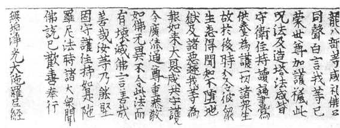
图8-12 韩国庆州佛国寺《无垢净光大陀罗尼经》
近年来，萧东发教授更是大力主张“雕版印刷术发明于隋代”的意见。他认为：“在肯定我国唐代初年已有雕版印刷品流行的前提下，亦不能完全否认隋代出现雕版印刷术的可能。尽管目前还缺乏有力的实物遗存和文献的佐证，但有理由认为由捶拓和印章的结合，向印刷的过渡正是在这一时期完成的。将印刷术起源时间确定在590—640年之间，是有根据的。印刷术起源于中国，时间是在6—7世纪，应该成为共识。”［51］这里所说的根据，除了认为当时的社会需要、物质基础和技术手段为雕版印刷术的发明创造了必备的条件外，比较直接的主要是两条。一条出自于文献记载，即隋费长房（557—601）《历代三宝记》卷十二所引隋文帝开皇十三年（549）十二月八日的诏令，其中说：“废像遗经，悉令雕撰。”虽然其中所说的“雕”究竟是指雕塑还是雕版，至今仍有不同的意见，但毕竟有指雕版刻印的可能。正是出自这样的理解，自明至清，陆深、胡应麟、方以智、高士奇、陆凤藻等人都赞同雕版印刷肇始于隋代的意见。另一条可算实物旁证，这就是冯鹏生先生在《中国木版水印概说》中提到的隋大业三年（607）《敦煌隋木刻加彩佛像》。对于此图是否木刻印品，虽然也有学者提出质疑，但经我国当代水印大家王荣麟、孙树梅等鉴定，认为“属雕版无疑”［52］。
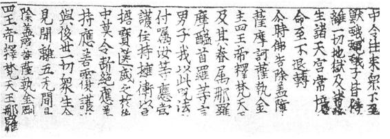
也许，最终确证“雕版印刷术发明于隋代”，还有赖于新的文献资料和实物的发现，但至少唐代初年已有雕版印刷，现在已日渐成为学界的共识。到了中晚唐时代，古籍文献中关于雕版印刷的明确记载明显增多。例如穆宗长庆四年十二月（825年1月），著名文学家元稹为白居易《白氏长庆集》作序，说白居易诗“邮侯墙壁之上无不书，王公妾妇、牛童马走之口无不道。至于缮写模勒、衒卖于市井，或持之以交酒茗者，处处皆是”。序中自注还说：“扬、越间多作书模勒乐天及余杂诗，卖于市肆之中也。”［53］这里所谓的“模勒”，即指雕版。又如晚唐柳玭《柳氏家训》中的一条资料，因为较详细地叙述了当时四川一带雕版印书的情况，也经常为人引用：“（僖宗）中和三年（883）癸卯夏，銮舆在蜀之三年也。余为中书舍人，旬休，阅书于重城之东南。其书多阴阳、杂志、占梦、相宅、九宫、五讳之流，又有字书小学，率雕板，印纸浸染，不可尽晓。”［54］此外，这一时期的印品实物也陆续有所发现。例如举世闻名的《金刚般若波罗蜜经》，发现于敦煌莫高窟，是长16尺，高1尺的卷子，由7张印纸粘连而成，卷首有释迦牟尼坐在莲花座上说法的插图，雕刻刀法纯熟，线条清晰鲜明，印刷的墨色均匀，是唐代雕版印刷的精品。卷末有“咸通九年（868）四月十五日王玠为二亲敬造普施”的题款，现藏伦敦英国博物院图书馆。（图8—13）这些文献资料和考古实物都说明，到了中晚唐时期，雕版印刷的技术不仅越发成熟，而且大为普及，因此，与此相适应的书籍制度，也就必然随之形成。
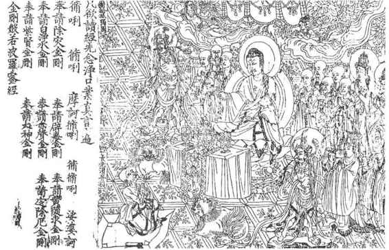
图8-13 唐代雕版《金刚般若波罗蜜经》扉页
雕版印刷术发明之后，书籍开始还是沿用传统的卷轴形制，至唐代中后期出现了经折装和旋风装，这在前文已经提及。所以早期的雕版印刷书籍，不像后世那样单独成页，而是用比后代书版长而窄的长条形木版来刻字印刷，然后把印好的印张粘连起来，再卷成卷子或折叠成经折装、旋风装。折叠形制的书籍，阅读或查检虽比卷轴方便，但折叠处容易断裂，断裂后整册书就变成了一张张的散叶。于是有人想到，既然卷轴和折叠形制的书籍本来就是由一张张的印张连接而成，为什么不可以直接用印张来装订呢？大约从五代时期开始，人们便开始采用散叶装订的形式了，首先是蝴蝶装，后来改用包背装，最后是线装。蝴蝶装出现以后的散叶装订书籍，彻底改变了延续一千多年的卷子式样，是我国书籍制度上的又一次革命。虽然后经不断地改进和革新，但散页装订的基本方法，可以说一直沿用到今天。
书籍采用散页装订法后，刻字版片的式样也随之变化，不仅由原先的长条形变为长方形，还有一套相应的版式，出现了一些专门术语。
散页装订的书都是单面印刷，一张纸上印版所占的地方，叫“版面”，版面以外空白的地方，上叫“天头”，下叫“地脚”，左右都叫“边”。（图8—14）
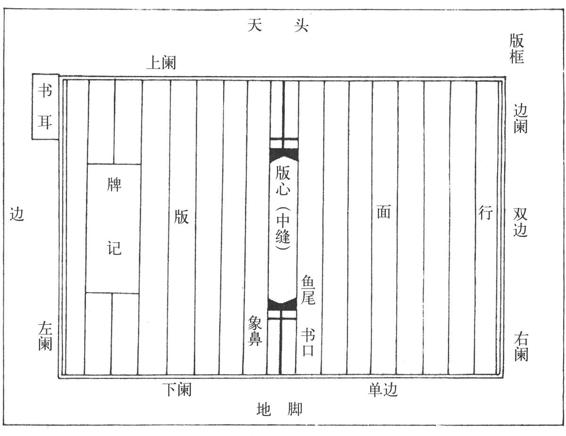
图8-14 散叶上的名词术语
版面的四周由线条拼连而成“版框”，拼成版框的线条叫“边阑”、“阑线”，也省称为“边”、“阑”（“阑”又写作“栏”）。版框上方的边阑叫“上阑”，下方的叫“下阑”，左右两边的叫“左右阑”。边阑有单、双之不同。只有一条线的称“单边”或“单阑”，一般用粗线条。如果在粗线条内侧加上一条细线，就构成“双边”，也叫“双阑”。雕版印刷的古籍，版框有四周单边、左右双边、四周双边三种形式，一般没有上下双边而左右单边的。
版框内，用直线自右至左划分为行，称“界行”或“界格”。正中的一行叫“版心”或“中缝”，不刻正文，有时刻上书名、篇名、卷数、页码、本页字数、刻工姓名等等。蝴蝶装以后的书籍，版心上往往有鱼尾形的花纹，鱼尾交叉之处，正当版面的中心，可作为书页对折的标准点。鱼尾如果是全黑的，称“黑鱼尾”；白色的称“白鱼尾”，白鱼尾上加各种花纹，是“花鱼尾”。版心上有时只刻一个鱼尾，叫“单鱼尾”，上下各刻一个鱼尾，称“双鱼尾”，在上的叫“上鱼尾”，在下的叫“下鱼尾”。也有的版心上不刻鱼尾，只有上下两道横线，甚至有连横线也不用的。
古籍采用包背装和线装时，一张散叶沿中缝对折，使两个半页的背面相合，有文字的一面露在外面，这时对折的中缝处在书籍开合的一边，因此也称“书口”。为了折叠整齐，有时书口在上鱼尾之上、下鱼尾之下各印一条黑直线，这是版心线。每页的版心合在一起，从书口上看是黑色的，叫做“黑口”。不印版心线的称“白口”。黑线宽粗的称“大黑口”或“粗黑口”，细窄的称“小黑口”或“细黑口”。因为鱼尾和黑色的版心线通连，对折起来后，从侧旁看去有些像长鼻大象的头部，所以又称“象鼻”。
蝴蝶装时期的书籍，有时左阑外上方刻一个小小的长方格，内刻篇名或篇名省称，叫做“书耳”。这是因为蝴蝶装书籍每页是沿中缝将有文字的一面对折，背面空白处在外，装订时每页的版心在书背一侧，而左右阑线在开合的书口一侧，这样，左阑外有篇名书耳，可以方便查阅。到了包背装和线装，版心转到了书口一侧，并且时常刻有书名、篇名，这样，书耳的提示、查阅功能消失，也就很少用了。
有些书籍在目录后或卷末空白处刻有“牌记”，也叫“书牌”或“木记”。内容一般是说明刻书人、刻书时间、地点、所据版本等等。牌记的外形多样，一般是长方框，坊刻本的牌记则往往搞得比较花哨，有的还加上几句广告式的宣传文字，以招徕顾客。
上述刻本书籍版面的种种格式，统称“版式”。不同时代、不同刻书地区、不同的刻书者，其书籍版式往往各具特色。因此在古籍版本学中，了解和研究版式的异同，是鉴定古籍版本的一个重要方面。
蝴蝶装又作“蝴蜨装”，始于唐末，盛行于北宋。前面提到，蝴蝶装的装订法，是每页从中缝将有文字的两个半页对折，背面空白处在外，然后把这样对折的一叠散页用一张纸从前包裹到后，并将各页折口处牢牢地粘连在这张纸上，以免脱落。
蝴蝶装书籍继承了折叠形制书籍翻阅方便的优点，装订成册后又不易断裂、散乱，所以很快成为书籍的主要形制。其所以得名，是因为书册打开后左右对称，犹如蝴蝶展开双翅。（图8—15）
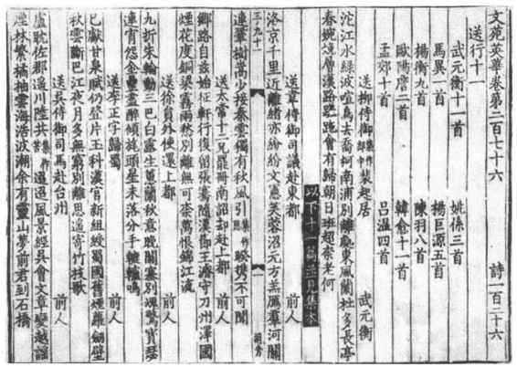
图8-15 台北傅斯年图书馆藏宋蝴蝶装《文苑英华》
蝴蝶装用以包裹书册前后、形成封面和封底的纸，叫“书衣”（今称“书皮”）。书衣往往内用软纸，外加一层硬纸，有时还用绫锦为表，很像现在的精装书。书衣封面左边有时贴上张狭长的签条，叫“书签”，上写书名、册次，有时加上卷次。书册的上端叫“书头”或“书首”，下端叫“书根”，右边粘连的一边叫“书背”或“书脊”，左边翻阅的一边叫“书口”。由于蝴蝶装的书衣都很坚硬结实，所以上架的方法与今天的书籍相似，是立放在书架上。只不过今天的书籍插立时是书背向外，书头在上，书根向下压在板上，而蝴蝶装则是书背向上，书根向外，书口向下压在板上。北京图书馆旧藏宋代蝴蝶装《册府元龟》和《欧阳文忠公集》，书根上写着书名和卷次，而且是由书背的一侧向书口一侧直行向下书写，书口处又有摩擦痕迹，这都是书口向下立放的证明。
蝴蝶装在宋代似乎还有不用粘贴而用线缝的。宋人张邦基《墨庄漫录》卷四说：“王洙原叔内翰尝云：作书册，粘叶为上，岁久脱烂，寻其次第，足可抄录，屡得逸书，以此获全。若缝缋，岁久断绝，即难次序。”“他日得奇书，不复作缝缋也。”这里所说的“缝缋”，就是指用线缝住单页而成册，其具体方法已不得其详。不过，大概正是因为张邦基所说缝线断绝后次序容易混乱，当时人较少采用。
蝴蝶装有一个缺点，就是由于每页有字的一面对折在内，空白的背面在外，打开书，往往碰上空白的背面。而且读完一页，必须连翻两页，才能继续读下去，也不甚方便。于是有人把书页无字的一面对折在内，有文字的一面露在外，再用一张书衣，把折叠好的一叠散页从前到后包裹起来，这就成了“包背装”，也叫“裹背装”。包背装的书籍，对折处的版心转到了书口一侧，版面之外的左右两个余边粘在书背上，这样，展读时就不会遇到空白，可以逐叶读去而不间断。（图8—16）
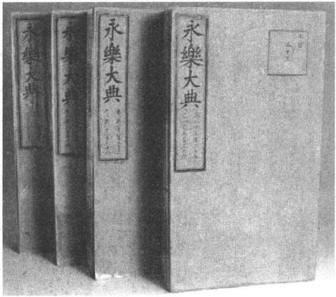
图8-16 包背装《永乐大典》
包背装始于北宋末，一直沿用到明代中叶。包背装书籍，书口正是书页的版心，上刻篇名、书名、卷次、页码后，作用如同蝴蝶装的书耳，查阅方便。但如果仍然采用蝴蝶装的插架办法，书口向下压在书架上，经常磨损后势必导致书页从中缝处断裂为两半。这样，不仅版心上的书名、篇名等不可辨识，翻阅和展读时又会像蝴蝶装那样屡遇空白。因此，人们便改用平放上架的方法，把许多书平叠放置。既然是平放，书衣也就不必用硬质的材料了，这样就出现了软书衣。而书根上的书名、篇名之类，也就由上下直写改为横写，如同后来的线装书一样。
包背装的书籍，要想把每页的两边牢牢地粘在书背上，比起蝴蝶装更为费事。而需要粘连的两个外边，版框外又总有较宽的余纸，因此有人便采用新方法，在余纸上打二至三个小孔，再用纸捻穿进小孔，把一册书订牢。这打孔穿订的一边叫做“书脑”，外边再用整张的书衣包裹起来，外表依然和包背装一样。这种经过改进的包背装，就已经为后来的线装打开了通路。
线装盛行于明代中叶，是在经过改进的包背装基础上发展起来的。包背装在书背处容易破损，此时仅靠两三个纸捻，不能把书脑部分压平伏，书脑的上下两角纸张容易卷起，影响外观和阅读。于是又有人作了改进：在打孔订好纸捻后，另外打孔用线穿订，这就是“线装”。线装书不像蝴蝶装、包背装那样用整张的书衣裹背，而是改用两张半页大小的软纸，分置书册前后，作为封面和封底，与书册一起装订。（图8—17）
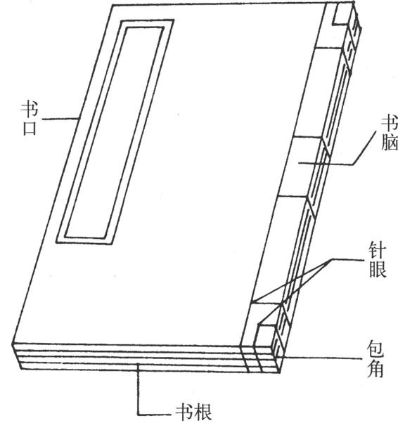
图8-17 线装示意图
线装书书脑一侧的上下两角容易磨损，有些贵重的书籍便用绫锦之类把书角包裹起来，叫“包角”。有时旧书修补或重装。在每页书里衬上一张白纸，叫“衬纸”。衬纸往往比原书纸长大，这样修补或重装的书籍，原书纸一般黄旧，衬底则洁白，黄白相间，人称“金镶玉”，又称“袍套装”或“惜古衬”。
散页装订的书籍，特别是线装书，封面内往往订有空白纸，多的有二至三张，作用如同“赘简”，起保护作用，这称为“护页”或“副页”，也称“看页”。护叶后是题署书名及著作人姓名等的扉页，过去称“内封面”。卷末封底内，也订有空白的护页，过去人所作的题跋，就常写在其上。
由于线装书都是软书衣，为保护书籍，也为便于上架收藏，明清以来的藏书家，还常为线装书制作书套，又称为“函”。套函一般用硬纸作衬里，外面裱糊蓝布，里面裱糊白纸，把书籍的四边包起，只留书头和书根，再用两个牙签插紧。有的则把书头和书根也包裹在内，称为“四合套”。书套因为是用糨糊裱糊而成，易被鼠咬虫蚀，日久又易散坏，所以有些人爱用“夹板”，就是用两块与书册一样大小的木板，上下两头各穿上一根带子，把书册夹紧扎牢。现在图书馆及私人收藏古籍，还常用套匣。这种套匣只包裹书册的封面、封底、书头、书根、书背，书口的一面空缺，书籍装套时用夹板或者不用，由空缺的一面装进去，套匣的书背上写书名、卷数、作者等等。线装书本来也是平放架上的，用书套之后，就可以像现代书籍一样立放架上，既整齐美观，又便于取用和放还。
如上所述，我国古代的书籍制度由简牍到册页（叶），经历了漫长的历史过程和不同的发展阶段。不同的书籍制度，总是与那一时期人类的文明程度相适应。书籍制度的发展历程，也如同人类文明的各个方面一样，沿着由低到高、由粗转精的道路在不断前进，其间凝聚着我国历代人民的心血和智慧。由于书籍制度反映并决定着书籍的外部形态，因此可以说，无论哪种形式，在历史上都曾对记录和交流人类的思想情感、保存和传播各种文化知识，起过举足轻重的作用，因而对于中华民族几千年悠久文明的形成，也具有不可低估的贡献。
［1］ 《尚书·洛诰》。
［2］ 《尚书·顾命》。
［3］ 《论衡·量知》。
［4］ 《太平御览》卷六六〇引。按：此段文字，古今多以为应劭转录《别录》原文，而余嘉锡先生则认为只是应劭自己对《别录》中“已杀青”一语的解释，见其《书籍制度补考》一文。此文原刊于《故宫博物院文献馆特刊》，后收入《余嘉锡论学杂著》下册，中华书局，1963。
［5］ 《过零丁洋》。
［6］ 《春秋左传正义·序》孔颖达《疏》。
［7］ 《仪礼·聘礼》贾公彦《疏》。
［8］ 王国维《简牍检署考》引《太平御览》。
［9］ 参看马衡《汉永光二年文书考释》及《汉兵器簿记略》二文，见《凡将斋金石丛稿》卷七及《居延汉简甲编》。
［10］ 湖南省文管会《长沙杨家湾M006号墓清理简报》，《文物参考资料》1954年第12期。
［11］ 《汉书·礼乐志》颜师古《注》。
［12］ 参看吴九龙《银雀山汉简释文》，文物出版社，1985，第11页。
［13］ 见《史记·酷吏列传》、《汉书·朱博传》。
［14］ 《论衡·谢短》。
［15］ 吴九龙《银雀山汉简释文》，第10—11页。
［16］ 参看李学勤《东周与秦代文明》，文物出版社，1984，第342—346页。
［17］ 睡虎地秦墓竹简整理小组《睡虎地秦墓竹简》，文物出版社，1978，第83页。
［18］ 吴九龙《银雀山汉简释文》，第231页。
［19］ 《庄子·天下》。
［20］ 《史记·秦始皇本纪》。
［21］ 《史记·滑稽列传》。
［22］ 《简牍检署考》。
［23］ 参看李学勤《东周与秦代文明》，第352—357页。
［24］ 《史记·高祖本纪》。
［25］ 《全汉文》卷五二。
［26］ 《后汉书·儒林传》。
［27］ 《隋书·经籍志》。
［28］ 参看《马王堆二、三号汉墓发掘简报》，《文物》1974年第7期；及文物编辑委员会编《文物考古工作三十年》，文物出版社，1979，第315页。
［29］ 《隋书·经籍志》。
［30］ 晓菡《长沙马王堆汉墓帛书概述》，《文物》1974年第9期。
［31］ 商承祚《战国楚帛书述略》，《文物》1964年第9期。
［32］ 晓菡《长沙马王堆汉墓帛书概述》，《文物》1974年第9期。
［33］ 张怀瓘《二王等书录》。
［34］ 《隋书·经籍志》。
［35］ 见《汉书》卷九七下，《外戚传》第六七下颜注引。
［36］ 黄文弼《罗布淖尔考古记》，国立北京大学出版部，1948，第168页。
［37］ 潘吉星《中国科学技术史·造纸与印刷卷》，科学出版社，1999，第55—57页。
［38］ 萧东发《中国图书出版印刷史》，北京大学出版社，2001，第35页。
［39］ 《晋书·左思传》。
［40］ 《北堂书钞》卷一〇四引王隐《晋书》。
［41］ 《洞天清录集·古翰墨真迹辨》。
［42］ 参看贾思勰《齐民要术》卷三，《杂说第三十》“染潢及治书法”一节。
［43］ 沈括《梦溪笔谈》卷一。
［44］ 程大昌《演繁露》卷一五。
［45］ 涵芬楼本《说郛》卷四八引侯延庆《退斋笔录》。
［46］ 李约瑟《中国科学技术史》第5卷《化学与相关技术》第一分册《纸和印刷》序，刘祖慰译，科学出版社、上海古籍出版社，1990。
［47］ 张秀民《中国印刷史》，上海人民出版社，1989，第12页。
［48］ 详参萧东发《中国图书出版印刷史》，第54—57页。
［49］ 〔日〕长泽规矩也《和汉书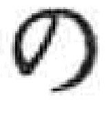印刷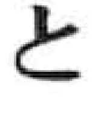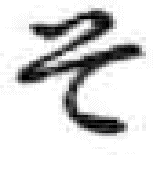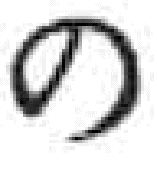历史》，吉川弘文馆，1992，第5—6页。
［50］ 李致忠《〈无垢净光大陀罗尼经〉译制考》，《新闻出版报》，1996年12月。
［51］ 萧东发《中国图书出版印刷史》，第45页。
［52］ 参萧东发《中国图书出版印刷史》，第58—59页。
［53］ 元稹《元氏长庆集》卷五一。
［54］ 见《旧五代史·唐明宗纪》注引，及南宋佚名《爱日斋丛钞》（《四库全书》辑本）卷一引。